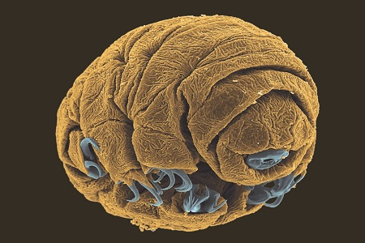
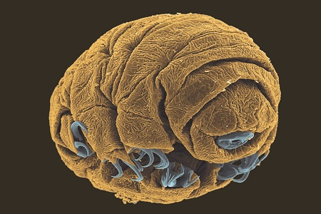

Tardigrade embryon
Tardigrade-oeuf

Tardigrade

Tardigrade

L'équipe du chercheur, Ingemar Jönsson, de l'université de Kristiangard
a lancé le programme Tardis (Tardigrades in space) destiné à tester la résistance des tardigrades.
Ils ont embarqué dans une fusée Soyouz quatre espèces de tardigrades.
Une fois en l'air, ils ont été exposés aux dures conditions de vie dans l'espace.
Au bout de dix jours, ces touristes spatiaux s'en sont plutôt bien sortis.
La plupart d'entre eux ont survécu, ce qui confirme leur résistance hors-pair.
Les tardigrades, sont des êtres microscopiques hyper-résistants que l'on rencontre un peu partout
Rien ne les effraie : ils survivent à des rayonnements des milliers de fois plus importants que nous, à des pressions équivalentes à six fois celles des profondeurs de l’océan
La température ne leur pose pas de problème non plus, que ce soit à -200 ºC ou à +150 ºC, ils s'en sortent.
Ils ont même survécu à des périodes prolongées dans l'espace sans protection alors que, si par malheur,
il nous arrivait la même chose, tout l'air de nos poumons sortirait, les tympans et les capillaires se briseraient, le sang bouillirait et l'ADN serait détruit.
Ses capacités incroyables font de l'animal un sujet d'étude populaire.
Le but des expériences de la Nasa sera d'examiner les processus d'adaptation des tardigrades à la vie en orbite,
et ainsi mieux comprendre les contraintes auxquelles les humains font face pour mieux les contrer.
Étudier leur biologie moléculaire sur du court et long-terme permettra de comprendre les mécanismes génétiques qui sont derrière cette adaptation au stress.
Par exemple, si les chercheurs trouvent que les tardigrades produisent beaucoup d'antioxydants, cela voudra dire qu'il faut en intégrer davantage dans le régime alimentaire des astronautes pour leur santé.
Tardigrade embryon
Tardigrade-oeuf
Tardigrade
Tardigrade